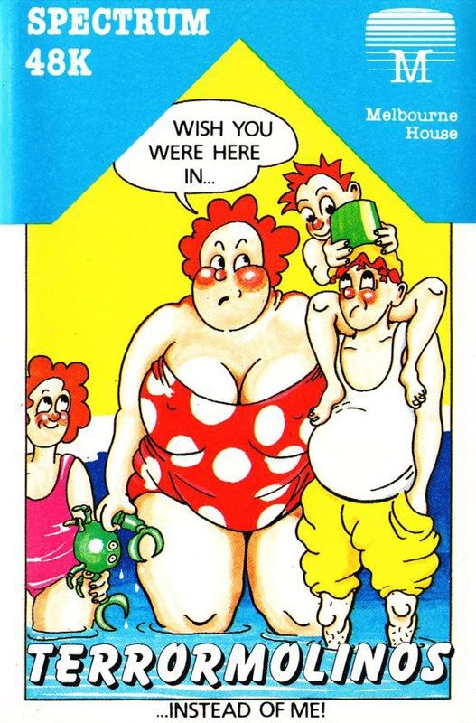
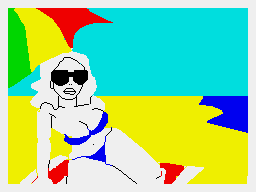
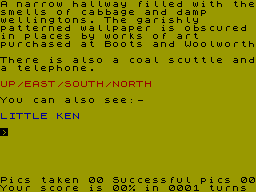
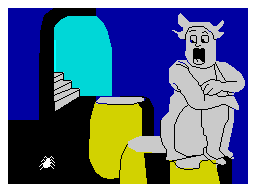

Terrormolinos


{kind=link}

| Publisher: | Melbourne House |
| Price: | £7.95 |
| Year: | 1985 |
| Source: | CRASH, Issue 23 |

Some games are pretty big even before they’re released and Terrormolinos certainly falls into this category. The authors of this holiday spoof are the very same as those who composed the Quilled classic Hampstead which was the first Quilled game to do anything in the charts. I was very pleased at Hampstead’s success, not just because I liked it, but for the reason that it tried something new, and a company had the sense to back it at a time when just about every other company was (and to a worrying extent still is) trying to produce the exact same game as its rivals.

The question you must want to ask now is, does Terrormolinos keep up the same standards of humour and user-friendliness seen in Hampstead? Well, the answer is, yes it does, and in many ways Terrormolinos is a far superior program to Hampstead — it features some terrific postcard pictures and keeps you in touch with your score, number of turns, and number of pictures successfully developed via a score table at the bottom of the screen. Verily, Terrormolinos is a very worthy successor to Hampstead.
You start your holiday, not in the Spanish Costa Brava, but in a semi in Slough one sunny Saturday morning. The wife Beryl has ordered the taxi and it suddenly strikes you it may be a good idea to get some packing done before the taxi arrives. As with all last minute packing you are almost certain to leave something important behind so it may well take you a few attempts to get over the first hurdle and board the plane. There is an added complication at this stage as you must pack your things and get the family off in the taxi to the airport within a limited number of moves. Hence you soon learn how to conserve moves and watch the number of moves taken tally at the bottom of the screen (the taxi starts honking its horn about move 35).

It is on the plane you first meet your fellow holidaymakers, a Miss Peach and a Mr Snargsby. Mr Snargsby would seem to have a penchant for intoxicating beverages while Miss Peach doesn’t object to having her picture taken; however, others may well object once they see the photo which results. Checking into the hotel is simple enough though its name, The Excrucio, is a little unnerving. Up to this point the adventure is very straightforward with simple problems and a very friendly vocabulary. In Spain itself the program offers more of a challenge as some of the disasters that befall any package holiday make themselves felt. But, all the while, you must keep an eye out for the occasions when a good photograph might be taken. Usually it is quite obvious when you should take a photograph and you shouldn’t run into the problem of running out of exposures too easily (you are given twelve and so to bring back ten snaps you can only make two mistakes).
One thing you’ll notice about Terrormolinos is its attempts to distance itself from The Quill around which it was developed. There are a machine-coded bottom two lines on each screen carrying your score etc, while your input line has no cursor and no beep accompanying input. The input routine is sure-footed, however, and even with no beep or cursor, inputting errors are rare.

There are two features about this game which I think make it a winner. The first is the magnificent sense of humour which runs through the whole program from the ‘garishly patterned wallpaper... obscured in places by works of art purchased at Boots and Woolworth’ and ‘your bedroom, scene of many a dull night’ in the semi in Slough, to the nightclub in Terrormolinos ‘where tourists attempt to emulate John Travolta to the sound of flamenco guitars’. The second is the impressive postcard pictures which either you take as reminders of your trip (and can be reviewed in order at the end of a game — a bit like a slide show) or are seen after a fatal mishap, eg after being gored by a bull or burnt to a bacon crisp by the ferocious Spanish sun. These pictures are simple and colourful, like seaside postcards, and I enjoyed them immensely.
Terrormolinos is a superb adventure which will appeal to a very broad audience. It has enough problems to keep the avid adventurer happy, enough humour to counter the winter blues, and picture postcards which are bright enough to colour even a black and white TV set. Above all is its user-friendliness and ease of play — even an adventure novice could quite quickly get to grips with this holiday saga. First it was Hampstead, now its the Spanish package holiday which gets the Lever/Jones treatment, and a jolly good job they’ve done too. Terrormolinos is a nice holiday from zapping little green aliens.
COMMENTS
| Difficulty: | Easy |
| Graphics: | Very attractive |
| Presentation: | Good |
| Input facility: | Verb/noun |
| Response: | Quick |
| General rating: | Super |
| Atmosphere: | 9 |
| Vocabulary: | 9 |
| Logic: | 9 |
| Addictive quality: | 9 |
| Overall: | 9 |